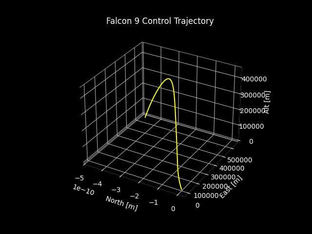
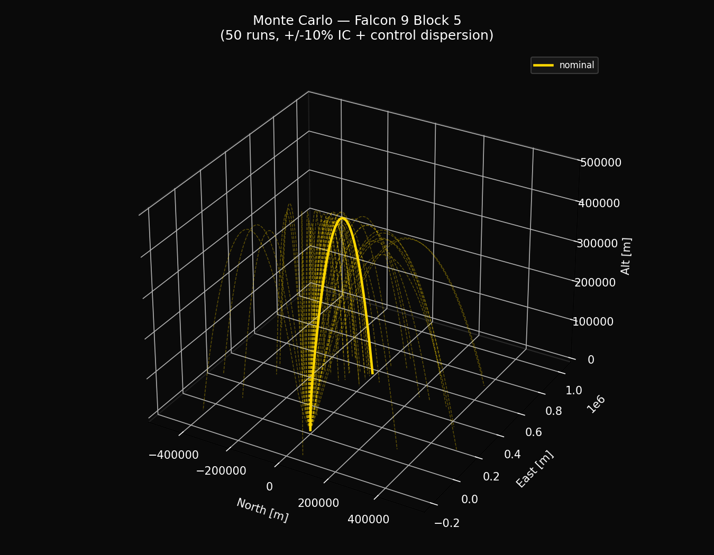
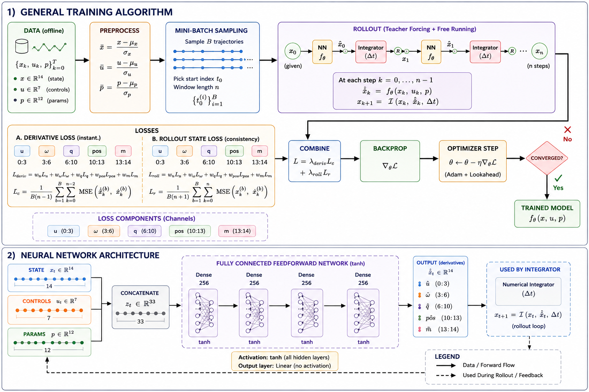
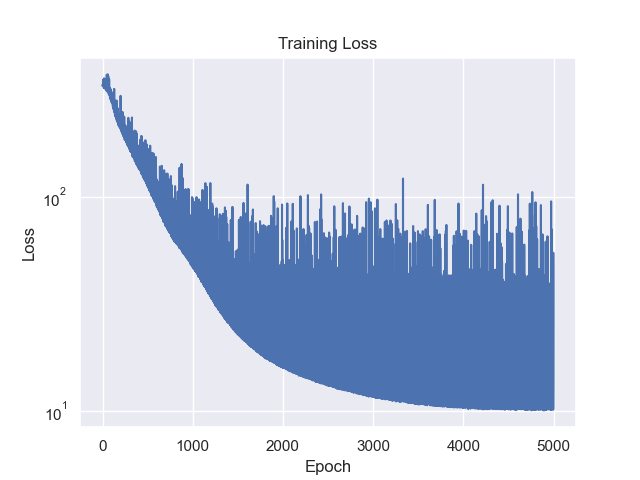
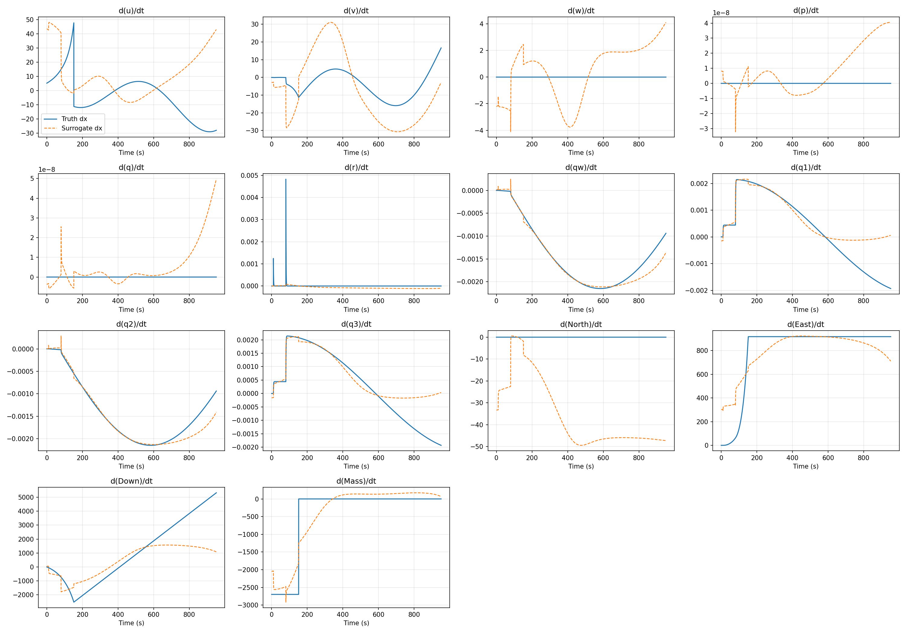
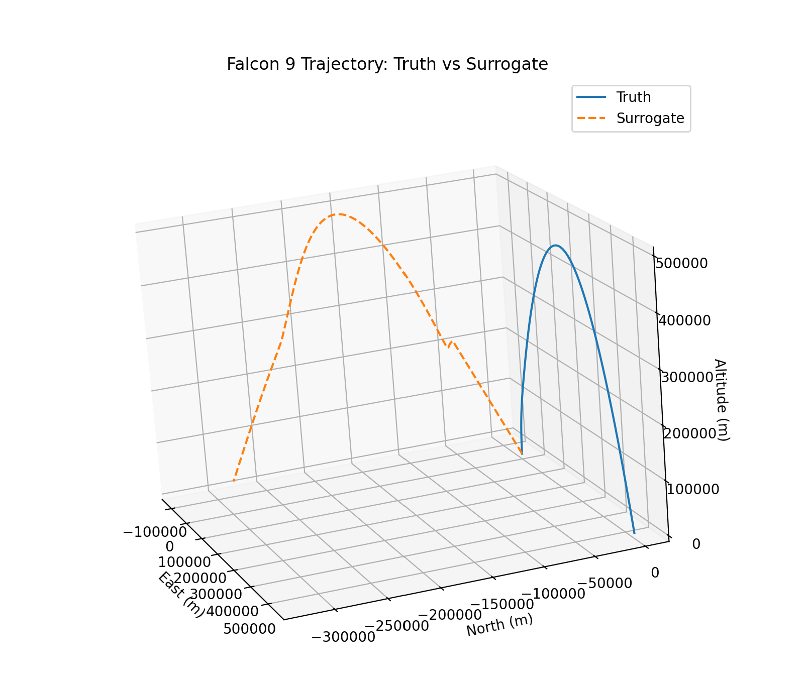

Engineering Objective
The Neural Netowrk can predict the 6-DOF derivatives(rotational velocity, tangental velocity, mass, etc) of a simple parabolic trajectory of a nominal Falcon 9 launch.
This demonstrates the potential for neural networks to be applied to Aerosapce Simulation techniques, which can allow for increased simulation speeds, especially for more advanced physics models
Developing a 6-DOF rocket simulation & Monte Carlo
To generate training data for the neural network, I built a numerical 6-DOF rocket simulator under vacuum assumptions. The state vector includes body-frame translational velocity, angular velocity, quaternion attitude, inertial position, and vehicle mass.
Roll, pitch, and yaw commands are applied through time-varying control gradients, while thrust and mass depletion are modeled directly in the equations of motion. Monte Carlo trajectories are generated by perturbing the control inputs around the nominal trajectory.
Pipeline:
Initial conditions + vehicle model + randomized control gradients →
6-DOF equations of motion →
RK4 integration →
complete trajectory →
repeat for Monte Carlo dataset


The simulator propagates translational velocity, body angular rates, quaternion attitude, inertial position, and mass as a 14-state system.
Quaternion attitude propagation avoids gimbal-lock associated with Euler-angle representations. Body angular rates p, q, and r directly drive the quaternion derivative at every integration step.
def quat_derivative(q, p, q_rate, r):
w, q1, q2, q3 = q
dq0 = -0.5 * (p*q1 + q_rate*q2 + r*q3)
dq1 = 0.5 * (p*w + r*q2 - q_rate*q3)
dq2 = 0.5 * (q_rate*w - r*q1 + p*q3)
dq3 = 0.5 * (r*w + q_rate*q1 - p*q2)
return np.array([dq0, dq1, dq2, dq3])dx[4] = (
(Jzz - Jxx) * p_b_rps * r_b_rps
+ Jxz * (p_b_rps**2 - r_b_rps**2)
+ m_mom
) / JyyEach trajectory perturbs the initial state and the three control multipliers to generate slightly different flight conditions. This exposes the neural network to a distribution of trajectories instead of a single nominal launch.
The multipliers scale the commanded pitch, roll, and yaw profiles, changing the vehicle's rotational behavior between simulations.
Instead of perturbing quaternion components independently, a random rotation axis and small rotation angle are generated. That rotation quaternion is multiplied by the nominal attitude and normalized.
This produces a physically valid attitude perturbation while keeping the quaternion on the unit sphere.
angle = rng.uniform(0.0, frac * math.pi)
axis = rng.standard_normal(3)
axis /= np.linalg.norm(axis)
dq = np.array([
math.cos(angle / 2),
math.sin(angle / 2) * axis[0],
math.sin(angle / 2) * axis[1],
math.sin(angle / 2) * axis[2]
])
q_new = quaternion_product(dq, q_nominal)
q_new /= np.linalg.norm(q_new)Physics-Informed Neural Network Training
The neural network acts as a surrogate for the 6-DOF equations of motion. Given the current vehicle state, control inputs, and physical parameters, it predicts all 14 state derivatives used by the numerical integrator.
Training combines derivative matching with physics-based residuals and multi-step rollout consistency, so the model is penalized both for incorrect instantaneous dynamics and for trajectory drift over time.

The input combines 14 vehicle states, 7 control values, and 12 physical vehicle parameters. The network outputs the derivative of every state variable.
Four fully connected hidden layers use tanh activation before a linear 14-dimensional output layer.
in_dim = state_dim + control_dim + param_dim
layers = [
nn.Linear(in_dim, 256),
nn.Tanh()
]
for _ in range(3):
layers += [
nn.Linear(256, 256),
nn.Tanh()
]
layers += [nn.Linear(256, state_dim)]
self.net = nn.Sequential(*layers)
def forward(self, state, control, params):
z = torch.cat([state, control, params], dim=-1)
return self.net(z)State derivatives are grouped by physical quantity so translational velocity, angular rates, quaternion dynamics, position, and mass can be weighted independently during training.
du = torch.mean((pred[:, 0:3] - true[:, 0:3])**2)
domg = torch.mean((pred[:, 3:6] - true[:, 3:6])**2)
dq = torch.mean((pred[:, 6:10] - true[:, 6:10])**2)
dpos = torch.mean((pred[:, 10:13] - true[:, 10:13])**2)
dm = torch.mean((pred[:, 13:14] - true[:, 13:14])**2)
loss = (
w_du * du +
w_domg * domg +
w_dq * dq +
w_dpos * dpos +
w_dm * dm
)The predicted derivative is also compared directly against the governing 6-DOF equations of motion at sampled collocation states. This adds the underlying dynamics as a training constraint instead of relying only on trajectory data.
During rollout training, predicted states are fed back into the network and integrated forward with RK4. This exposes accumulated error that may not appear in single-step derivative loss.
k1 = f(state)
k2 = f(state + 0.5 * dt * k1)
k3 = f(state + 0.5 * dt * k2)
k4 = f(state + dt * k3)
state_next = state + (dt / 6.0) * (
k1 + 2*k2 + 2*k3 + k4
)Stochastic Gradient Descent — Current Work

Training does not evaluate every point of every trajectory during every epoch. Instead, I use a Grid–Latin Hypercube Sampling strategy to select a distributed subset of states from each trajectory.
The changing samples produce different mini-batch gradients between epochs, creating the stochastic optimization behavior needed to explore the loss surface without repeatedly following one fixed gradient.
Each trajectory is divided into equal temporal bins. Grid samples use fixed locations within those bins, while Latin Hypercube samples choose a new random location inside each bin every epoch.
This preserves coverage across the entire flight while continuously changing which individual states contribute to the gradient.
bin_width = n_samples_in_traj / n_points
# Fixed grid samples
bin_starts = torch.arange(
n_grid,
device=device,
dtype=torch.float32
) * bin_width
grid_idx = bin_starts.long()
# Latin Hypercube samples
bin_starts = (
torch.arange(n_lhs, device=device)
+ n_grid
) * bin_width
offsets = torch.rand(
n_lhs,
device=device
) * bin_width
lhs_idx = (bin_starts + offsets).long()Because the LHS points are redrawn, the sampled batch B changes between epochs. The resulting gradient is therefore an estimate of the gradient over the complete trajectory dataset rather than one identical update each iteration.
Adam performs the fast parameter updates. Lookahead periodically pulls those fast weights back toward a slower set of parameters, reducing sensitivity to noisy individual optimization steps.
base_optimizer = torch.optim.Adam(
self.parameters(),
lr=self.lr
)
optimizer = Lookahead(
base_optimizer,
k=5,
alpha=0.5
)
loss.backward()
torch.nn.utils.clip_grad_norm_(
self.parameters(),
0.5
)
optimizer.step()The current challenge is balancing the data-fitting and physics objectives. Their gradients can point in different directions, meaning an update that improves one objective may worsen the other.
I am tracking gradient magnitude and cosine similarity to identify these conflicts and determine how the loss weighting and local curvature should influence the optimization step.
g_data = torch.autograd.grad(
data_loss,
self.parameters(),
retain_graph=True
)
g_eom = torch.autograd.grad(
eom_loss,
self.parameters(),
retain_graph=True
)
gd = torch.cat([g.reshape(-1) for g in g_data])
ge = torch.cat([g.reshape(-1) for g in g_eom])
cos_similarity = (
torch.dot(gd, ge)
/ (torch.norm(gd) * torch.norm(ge))
)
